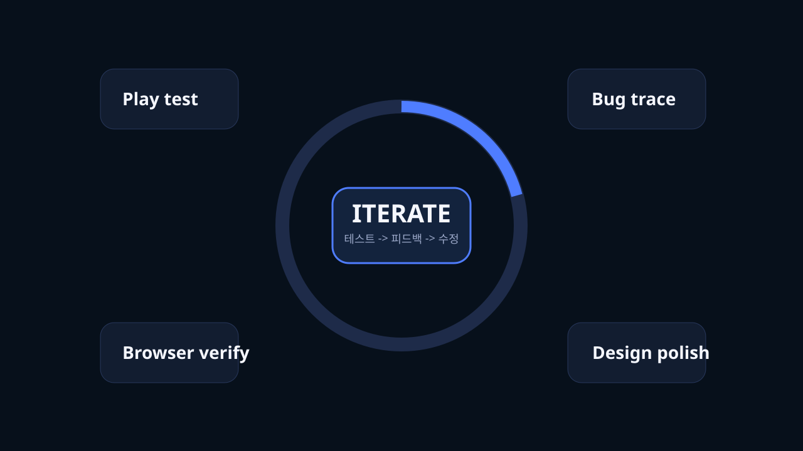

이 장면이 말하는 것
핵심은 AI가 완벽한 답을 한 번에 낸 것이 아니라, 사람처럼 여러 차례 테스트하고 피드백을 먹이며 점점 더 완성도 높은 방향으로 밀어붙였다는 점입니다.
Play test
Bug trace
Design polish
Browser verify
플레이 테스트를 붙이고, 문제를 발견하고, 다시 문장으로 피드백해 수정하는 루프가 계속 반복됐습니다.

핵심은 AI가 완벽한 답을 한 번에 낸 것이 아니라, 사람처럼 여러 차례 테스트하고 피드백을 먹이며 점점 더 완성도 높은 방향으로 밀어붙였다는 점입니다.